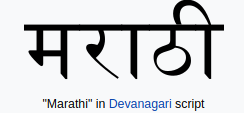

Marathi
Marathi is an Indo-Aryan language spoken predominantly by around 83.1 million Marathi people of Maharashtra, India. It is the official language and co-official language in the Maharashtra and Goa states of Western India, respectively.
At 83.1 million speakers in 2019, Marathi ranks 10th in the list of most spoken languages in the world. Marathi has the third largest number of native speakers in India, after Hindi and Bengali. The language has some of the oldest literature of all modern Indian languages, dating back to around 600 AD.The major dialects of Marathi are Standard Marathi and the Varhadi dialect. Koliand Malvani Konkani have been heavily influenced by Marathi varieties.
Marathi distinguishes inclusive and exclusiveforms of 'we' and possesses a three-way gendersystem that features the neuter in addition to the masculine and the feminine.
- Native speakers: 83 million approximately
- Native to: India
- Region: Maharashtra
